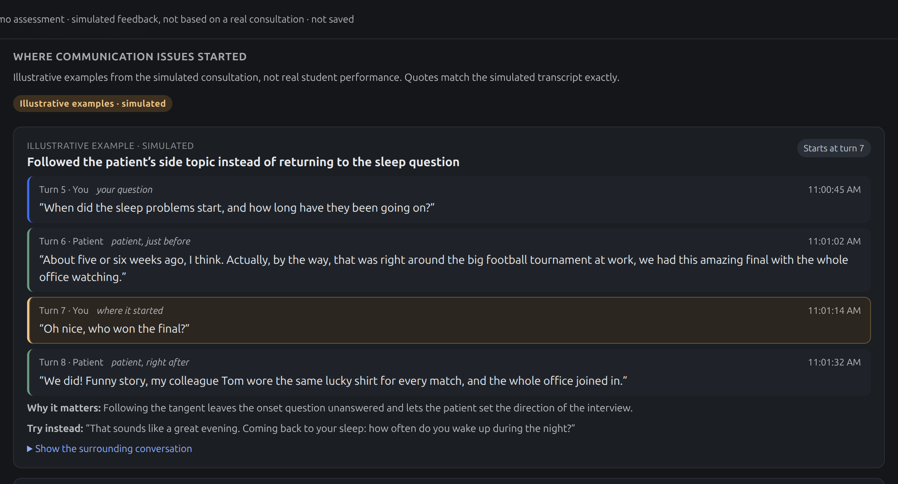

Meet your AI patient
Practise the hard conversations before they're real.
A life-size AI patient for psychotherapy training.
Distracted
Aggressive
Feedback
Harsh Khandelwal · Debanjana Bhattacharjya · Dr. Andreas Weigert · Parisa Bastani
Mary · easily distracted
She drifts. You steer.
Ryan · aggressive
He pushes. You de-escalate.
Feedback on the exact turn.

What to say instead
Practise. Get feedback. Try again.
Next: more traits · more situations · Vision Pro classroom test